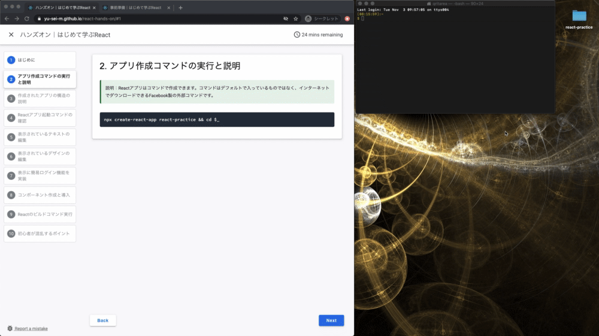
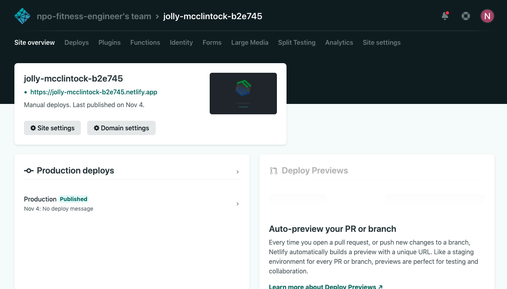

ハンズオンの流れ
- はじめに（ハンズオンの流れ）
- 第一回で作ったアプリの確認
- ディレクトリとファイルの追加
- ページ単位でのファイルの編集
- ルーティング管理ライブラリ導入
- ルーティングの設定（index.js）
- ルーティングの設定（routes.js）
- ルーティングの設定（App.js）
- デプロイとチャレンジ課題
なお、本ハンズオンはこちらの事前準備を完了していることが前提になります。
node -v
Macの方
sudo n 10.19.0
Winの方
nodist 10.19.0
残念ながら上のコマンドを実行してもバージョンが変わらない方、そもそも環境構築を完了していない方は、今回は追いつくことは難しいと判断されるため、今回は聴講スタイルでご参加ください。
それでは進めていきましょう。
以下のボタンをクリックしてダウンロードして展開した後にそのフォルダのディレクトリでその下のコマンドを実行してください。
Windowsの方のみパワーシェルで実行するコマンド１つ
npm install -g npx
WindowsもMacもLinuxも全ての方が実行するコマンド３つ
npm install create-react-app
ライブラリの一括インストール
npm install
ローカルサーバーの起動
npm start
起動に成功すると、ブラウザで以下のようなデフォルトの雛形アプリを確認することができます。


開けたら、編集を始める前にReactアプリの中身について確認しておきます。

雛形アプリの中身について
以下、簡単に説明します。
名前 | 説明 |
node_modules | このアプリが利用しているライブラリが配置される |
public | 静的サイトを公開したいときにファイルを配置する |
src | このアプリを開発するときに書くコードやプログラムを配置する |
.gitignore | リモートリポジトリにプッシュしないファイルを書く |
package.json | このアプリのライブラリや各種情報を書く |
README.md | このディレクトリのアプリの説明などを書く |
yarn.lock | このアプリの利用ライブラリの依存関係が書かれている |
現段階で完璧に理解できている必要はありません。重要なのはsrcディレクトリの中に自分で開発するコードが増えていくというイメージを持つことです。ざっと把握できたら次に進みましょう。
- routes.jsの作成
- pagesディレクトリの作成
- pagesディレクトリの中にTop.jsの作成
- pagesディレクトリの中にAbout.jsの作成
第１回で丁寧に説明しているため作り方は掲載しませんが、やり方がわからない人はハンズオンで一緒に作業して作成しましょう。
import '../App.css';
import Link from '../components/link.js'
import Footer from '../components/footer.js'
const checkIn = () => {
var pass = prompt("パスワードを入力して下さい:","");
if (pass != null) window.location.href = "https://yu-sei-m.github.io/" + pass;
}
const Top = () => {
const logo = '/images/logo.png';
return (
<div className="App">
<header className="App-header">
<img src={logo} className="App-logo" alt="logo" />
<br/>
<br/>
<p>
<b>フィットネス・エンジニアの勉強会</b>
</p>
<Link text="はじめて学ぶReact" onClick={()=>checkIn()}/>
</header>
<Footer/>
</div>
);
}
export default Top;
これは前回の勉強会で一緒に完成させたコードなので詳しく解説はしません。
コンポーネントの名前だけTopになっていますね！
import '../App.css';
import Footer from '../components/footer.js'
const About = () => {
return (
<div className="App">
<header className="App-header">
<p>
<b>フィットネス・エンジニアとは</b>
</p>
<a href="https://fitness-engineer.jp" >FitnessEngineer公式ページ</a>
</header>
<Footer/>
</div>
);
}
export default About;
今回はページ遷移の方法をマスターすることが目的なので、ページの中身は必要最小限にしています。
写経ないしコピペが終わったら完了です。
それではSPA開発の下ごしらえが終わったので、メイン部分の実装をスタートします！次へ進みましょう。
npm install react-router-dom
初心者の場合、記事を読んで理解できることが少なかった方もいらっしゃると思いますが、基本的にルーティング実現する際は react-router-dom を利用するということが押さえられていればOKです。
次に進みましょう！
完成後のindex.js
import React from 'react';
import ReactDOM from 'react-dom';
import { BrowserRouter } from "react-router-dom";
import './index.css';
import App from './App';
import reportWebVitals from './reportWebVitals';
ReactDOM.render(
<BrowserRouter>
<App />
</BrowserRouter>,
document.getElementById('root')
);
reportWebVitals();
react-router-domをインポートして、render（描画）するAppコンポーネントをBrowserRouterで挟んでいますね。
index.jsより抜粋
<BrowserRouter>
<App />
</BrowserRouter>
エッセンスとしては、react-router-domでSPAのページ遷移を実現する場合は、このようにルーティングが登場するAppコンポーネントをブラウザルーターの子要素にしてあげる必要があるということですね。SPA実現のためにわかっておくべきことは非常にシンプルです。
どのように変更したのかを確認できたら、次に進みましょう。
完成後のroutes.js
import Top from './pages/Top';
import About from './pages/About';
const routes = [
{ path: '/', component: Top, exact : true },
{ path: '/about', component: About },
];
export default routes;
先ほど作成したページコンポーネントをインポートし、routes変数の中に配列データをセットしていますね。
このファイルは次の作業で読み込みます！もう少しで完成です！次に進みましょう。
完成後のApp.js
import React from "react";
import { Route, Switch, withRouter } from "react-router-dom";
import routes from "./routes";
const App = () => {
return (
<Switch>
{routes.map((route, idx) => (
<Route
path={route.path}
exact={route.exact}
component={route.component}
key={idx}
/>
))}
</Switch>
);
};
export default withRouter(App);
App.jsより抜粋
{routes.map((route, idx) => (
<Route
path={route.path}
exact={route.exact}
component={route.component}
key={idx}
/>
))}
ここはJavaScriptを始めたばかりの人などは自力で理解するのは難しいかもしれません。解説を聞きましょう。
SwitchとRouteの使い方は理解できたでしょうか！先に自分のペースで進めたい方の中でmap関数の挙動は理解できない人はハンズオン中に解説しますので一旦先に進めて必要に応じて戻って来てもらえればオーケーです。次に進んでネット上に公開しましょう！
npm run-script build
このbuildコマンドを実行するとbuildディレクトリが作成されます。
buildディレクトリとは、本番環境で公開するために書き出されたウェブアプリ（ウェブサイト）のディレクトリのことです。

完成おめでとうございます！

作成したサイトが表示されましたね！お疲れ様でした！
早く終わった人は課題にも挑戦してみましょう！
Doneを押してからChallengeをクリックして「react-spa-challenge」と入力すると課題に取り組むことができます。
以下のボタンをクリックしても今日の課題を開けます。
◆ ◇ ◆ ◇ ◆ ◇ ◆ ◇ ◆ ◇ ◆ ◇ ◆ ◇ ◆ ◇ ◆ ◇
完成できなかった人のための共有
ダウンロードして展開した後に以下のコマンドを実行してください。
本日のハンズオンで作業した内容が反映されたアプリを起動することができます。
ライブラリのインストール
npm install
ローカルサーバーの起動
npm start
作成したアプリのビルド
npm run-script build